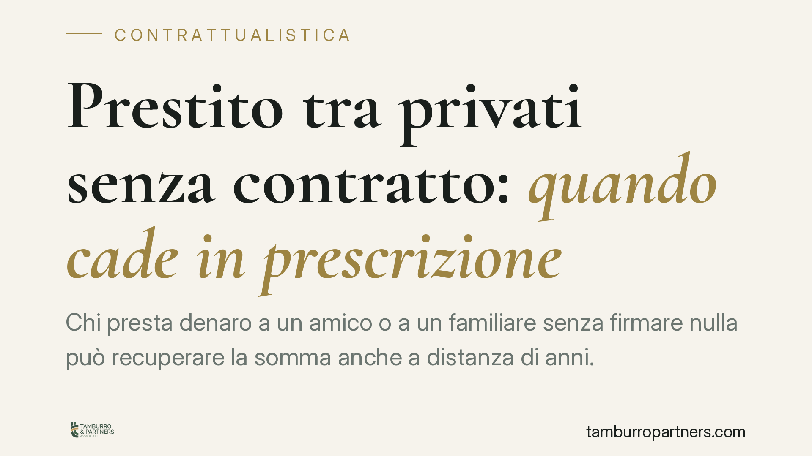

Prestito tra privati senza contratto: quando cade in prescrizione
Chi presta denaro a un amico o a un familiare senza firmare nulla può recuperare la somma anche a distanza di anni. Il diritto alla restituzione si prescrive di regola in dieci anni, ma il vero problema non è il termine: è provare che il prestito c'è stato e da quando decorre il tempo. Vediamo cosa dice la legge e come muoversi.

Il caso tipico
Due persone si accordano a voce: una presta una somma, l'altra promette di restituirla. Nessun contratto scritto, magari solo un bonifico o una consegna in contanti. Quando arriva il momento di riavere il denaro, il debitore nega o rinvia. A quel punto la domanda è duplice: entro quando posso agire e come dimostro il prestito?
Inquadramento normativo
Il prestito di denaro tra privati è, dal punto di vista giuridico, un contratto di mutuo (art. 1813 cod. civ.). La sua validità non dipende dalla forma scritta: l'accordo verbale è pienamente efficace. La forma scritta serve, semmai, a provarlo più facilmente, non a farlo esistere.
Sul fronte dei termini, si applica la prescrizione ordinaria decennale prevista dall'art. 2946 cod. civ.: trascorsi dieci anni senza che il creditore agisca o solleciti formalmente, il diritto alla restituzione si estingue. Non si applica la prescrizione breve quinquennale dell'art. 2948 cod. civ., riservata a canoni, interessi e prestazioni periodiche: la restituzione del capitale prestato resta nel perimetro dei dieci anni.
Su questi principi si sono espressi in modo convergente diversi tribunali di merito - tra cui Frosinone, Cassino e Santa Maria Capua Vetere - in linea con l'orientamento della Corte di Cassazione: il rapporto di mutuo va provato dal creditore, e da questa prova dipende anche l'individuazione del momento da cui parte il termine.
Da quando decorrono i dieci anni
Qui sta il punto delicato. La prescrizione non decorre dal giorno del prestito, ma dal momento in cui il diritto alla restituzione può essere fatto valere.
Se le parti hanno fissato una data di rientro, il termine parte da quella scadenza. Se non è stato pattuito alcun termine - ipotesi frequente nei prestiti informali - la restituzione è esigibile solo dopo che il creditore ne fa richiesta, con la possibilità che sia il giudice a fissare il termine ai sensi dell'art. 1817 cod. civ. In pratica, finché non c'è una richiesta formale, l'orologio della prescrizione può non essere ancora partito.
Il vero ostacolo: la prova
L'onere di dimostrare il prestito grava sul creditore. E qui il prestito verbale mostra la sua fragilità.
Un bonifico bancario prova il trasferimento di denaro, ma non la sua causa: da solo non dice se si trattava di prestito, donazione o pagamento di un debito. Occorre quindi corredarlo di altri elementi: messaggi, email, riconoscimenti di debito anche parziali, testimonianze, causali di bonifico coerenti ("prestito", "restituzione entro...").
La consegna di contanti senza tracce documentali è la situazione più esposta: in giudizio rischia di ridursi alla parola di uno contro quella dell'altro.
Implicazioni pratiche
Per chi ha prestato denaro, il messaggio è chiaro: il tempo gioca contro, ma il nemico principale non è la prescrizione decennale, è la carenza di prova. Anche entro i dieci anni, senza documenti solidi il recupero diventa incerto.
Per chi ha ricevuto un prestito, va ricordato che l'assenza di contratto scritto non cancella l'obbligo di restituire: il debito resta, salvo che il creditore lasci decorrere invano il termine dopo aver reso esigibile il credito.
Cosa fare in concreto
- Formalizzate la richiesta di restituzione con una comunicazione scritta (raccomandata o PEC): interrompe la prescrizione e, nei prestiti senza scadenza, rende esigibile il credito.
- Raccogliete ogni traccia del prestito: bonifici con causale, messaggi, chat, email in cui il debitore riconosce la somma o promette il rientro.
- Puntate a un riconoscimento di debito scritto, anche successivo: è la prova più efficace e riavvia il termine decennale.
- Evitate consegne di contanti non tracciate: se inevitabili, accompagnatele almeno da una ricevuta firmata.
- Verificate la decorrenza prima di agire: individuare correttamente il momento di partenza del termine può fare la differenza tra un credito ancora esigibile e uno prescritto.
Un intervento tempestivo, prima che i rapporti si deteriorino e le prove si disperdano, aumenta sensibilmente le possibilità di recupero.
Disclaimer
Contributo informativo a cura di Tamburro & Partners - Avv. Giuseppe Tamburro. Non costituisce parere legale.
Ogni contratto ha il suo equilibrio.
Se vuoi una revisione delle clausole o una redazione su misura, scrivi allo studio. Ti rispondiamo entro un giorno lavorativo.